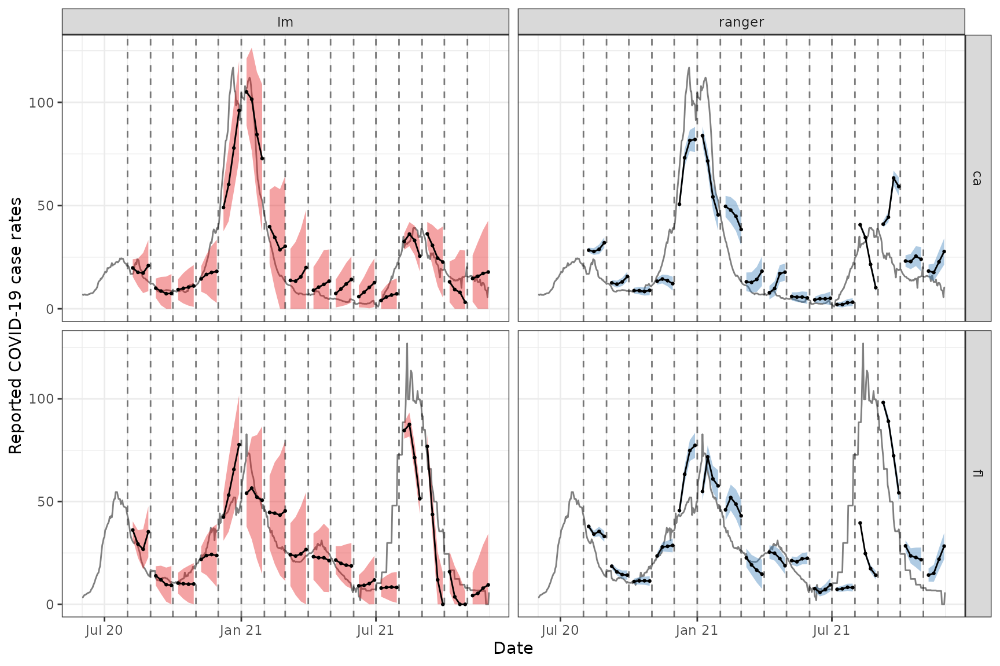
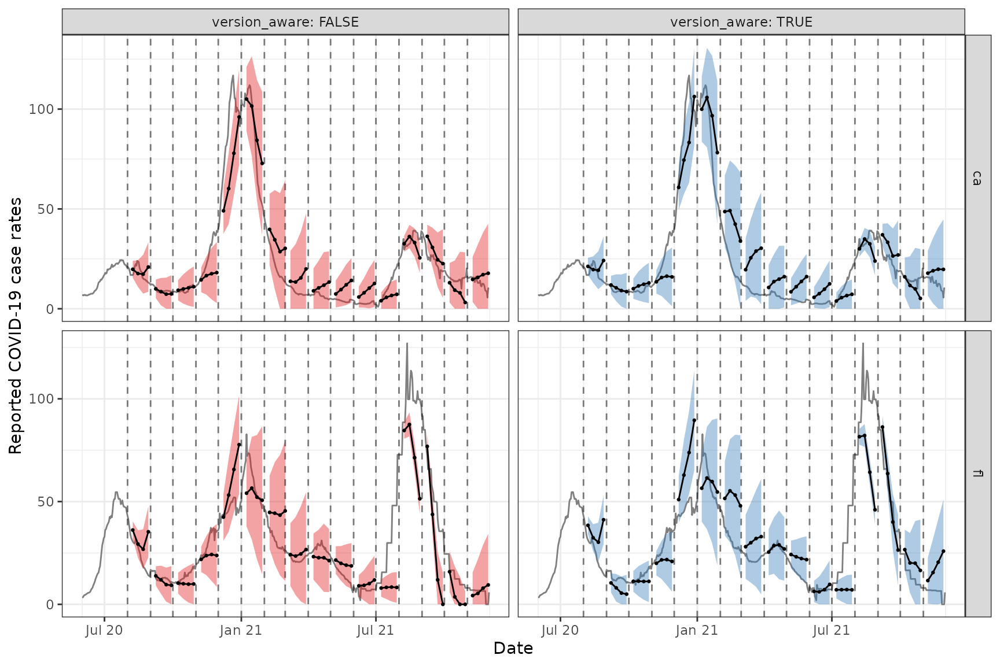

library(epipredict)
library(data.table)
library(dplyr)
library(tidyr)
library(ggplot2)
library(magrittr)
library(purrr)Demonstrations of sliding AR and ARX forecasters
A key function from the epiprocess package is
epi_slide(), which allows the user to apply a function or
formula-based computation over variables in an epi_df over
a running window of n time steps (see the following
epiprocess vignette to go over the basics of the function:
“Slide
a computation over signal values”). The equivalent sliding method
for an epi_archive object can be called by using the
wrapper function epix_slide() (refer to the following
vignette for the basics of the function: “Work
with archive objects and data revisions”). The key difference from
epi_slide() is that it performs version-aware computations.
That is, the function only uses data that would have been available as
of time t for that reference time.
In this vignette, we use epi_slide() and
epix_slide() for backtesting our
arx_forecaster on historical COVID-19 case data from the US
and from Canada. More precisely, we first demonstrate using
epi_slide() to slide ARX forecasters over an
epi_df object and compare the results obtained from using
different forecasting engines. We then compare the results from
version-aware and unaware forecasting, where the former is obtained from
applying epix_slide() to the epi_archive
object, while the latter is obtained from applying
epi_slide() to the latest snapshot of the data.
Comparing different forecasting engines
Example using CLI and case data from US states
First, we download the version history (ie. archive) of the
percentage of doctor’s visits with CLI (COVID-like illness) computed
from medical insurance claims and the number of new confirmed COVID-19
cases per 100,000 population (daily) for all 50 states from the
COVIDcast API. We process as before, with the modification that we use
sync = locf in epix_merge() so that the last
version of each observation can be carried forward to extrapolate
unavailable versions for the less up-to-date input archive.
theme_set(theme_bw())
y <- readRDS(system.file(
"extdata", "all_states_covidcast_signals.rds",
package = "epipredict", mustWork = TRUE
))
y <- purrr::map(y, ~ select(.x, geo_value, time_value, version = issue, value))
x <- epix_merge(
y[[1]] %>% rename(percent_cli = value) %>% as_epi_archive(compactify = FALSE),
y[[2]] %>% rename(case_rate = value) %>% as_epi_archive(compactify = FALSE),
sync = "locf",
compactify = TRUE
)
rm(y)After obtaining the latest snapshot of the data, we produce forecasts on that data using the default engine of simple linear regression and compare to a random forest.
Note that all of the warnings about the forecast date being less than the most recent update date of the data have been suppressed to avoid cluttering the output.
# Latest snapshot of data, and forecast dates
x_latest <- epix_as_of(x, max_version = max(x$versions_end))
fc_time_values <- seq(
from = as.Date("2020-08-01"),
to = as.Date("2021-11-01"),
by = "1 month"
)
aheads <- c(7, 14, 21, 28)
k_week_ahead <- function(epi_df, outcome, predictors, ahead = 7, engine) {
epi_slide(
epi_df,
~ arx_forecaster(
.x, outcome, predictors, engine,
args_list = arx_args_list(ahead = ahead)) %>%
extract2("predictions") %>%
select(-geo_value),
before = 120 - 1,
ref_time_values = fc_time_values,
new_col_name = "fc"
) %>%
select(geo_value, time_value, starts_with("fc")) %>%
mutate(engine_type = engine$engine)
}
# Generate the forecasts and bind them together
fc <- bind_rows(
map(aheads,
~ k_week_ahead(
x_latest, "case_rate", c("case_rate", "percent_cli"), .x,
engine = linear_reg())
) %>% list_rbind() ,
map(aheads,
~ k_week_ahead(
x_latest, "case_rate", c("case_rate", "percent_cli"), .x,
engine = rand_forest(mode = "regression"))
) %>% list_rbind()
) %>%
pivot_quantiles(fc_.pred_distn)Here, arx_forecaster() does all the heavy lifting. It
creates leads of the target (respecting time stamps and locations) along
with lags of the features (here, the response and doctors visits),
estimates a forecasting model using the specified engine, creates
predictions, and non-parametric confidence bands.
To see how the predictions compare, we plot them on top of the latest case rates. Note that even though we’ve fitted the model on all states, we’ll just display the results for two states, California (CA) and Florida (FL), to get a sense of the model performance while keeping the graphic simple.
fc_cafl <- fc %>% filter(geo_value %in% c("ca", "fl"))
x_latest_cafl <- x_latest %>% filter(geo_value %in% c("ca", "fl"))
ggplot(fc_cafl, aes(fc_target_date, group = time_value, fill = engine_type)) +
geom_line(data = x_latest_cafl, aes(x = time_value, y = case_rate),
inherit.aes = FALSE, color = "gray50") +
geom_ribbon(aes(ymin = `0.05`, ymax = `0.95`), alpha = 0.4) +
geom_line(aes(y = fc_.pred)) +
geom_point(aes(y = fc_.pred), size = 0.5) +
geom_vline(aes(xintercept = time_value), linetype = 2, alpha = 0.5) +
facet_grid(vars(geo_value), vars(engine_type), scales = "free") +
scale_x_date(minor_breaks = "month", date_labels = "%b %y") +
scale_fill_brewer(palette = "Set1") +
labs(x = "Date", y = "Reported COVID-19 case rates") +
theme(legend.position = "none")
For the two states of interest, simple linear regression clearly performs better than random forest in terms of accuracy of the predictions and does not result in such in overconfident predictions (overly narrow confidence bands). Though, in general, neither approach produces amazingly accurate forecasts. This could be because the behaviour is rather different across states and the effects of other notable factors such as age and public health measures may be important to account for in such forecasting. Including such factors as well as making enhancements such as correcting for outliers are some improvements one could make to this simple model.1
Example using case data from Canada
By leveraging the flexibility of epiprocess, we can
apply the same techniques to data from other sources. Since some
collaborators are in British Columbia, Canada, we’ll do essentially the
same thing for Canada as we did above.
The COVID-19 Canada Open Data Working Group collects daily time series data on COVID-19 cases, deaths, recoveries, testing and vaccinations at the health region and province levels. Data are collected from publicly available sources such as government datasets and news releases. Unfortunately, there is no simple versioned source, so we have created our own from the Github commit history.
First, we load versioned case rates at the provincial level. After
converting these to 7-day averages (due to highly variable provincial
reporting mismatches), we then convert the data to an
epi_archive object, and extract the latest version from it.
Finally, we run the same forcasting exercise as for the American data,
but here we compare the forecasts produced from using simple linear
regression with those from using boosted regression trees.
# source("drafts/canada-case-rates.R)
can <- readRDS(system.file(
"extdata", "can_prov_cases.rds",
package = "epipredict", mustWork = TRUE
))
can <- can %>%
group_by(version, geo_value) %>%
arrange(time_value) %>%
mutate(cr_7dav = RcppRoll::roll_meanr(case_rate, n = 7L)) %>%
as_epi_archive(compactify = TRUE)
can_latest <- epix_as_of(can, max_version = max(can$DT$version))
# Generate the forecasts, and bind them together
can_fc <- bind_rows(
map(aheads,
~ k_week_ahead(can_latest, "cr_7dav", "cr_7dav", .x, linear_reg())
) %>% list_rbind(),
map(aheads,
~ k_week_ahead(
can_latest, "cr_7dav", "cr_7dav", .x,
boost_tree(mode = "regression", trees = 20))
) %>% list_rbind()
) %>%
pivot_quantiles(fc_.pred_distn)The figures below shows the results for all of the provinces.
ggplot(can_fc %>% filter(engine_type == "lm"),
aes(x = fc_target_date, group = time_value)) +
coord_cartesian(xlim = lubridate::ymd(c("2020-12-01", NA))) +
geom_line(data = can_latest, aes(x = time_value, y = cr_7dav),
inherit.aes = FALSE, color = "gray50") +
geom_ribbon(aes(ymin = `0.05`, ymax = `0.95`, fill = geo_value),
alpha = 0.4) +
geom_line(aes(y = fc_.pred)) + geom_point(aes(y = fc_.pred), size = 0.5) +
geom_vline(aes(xintercept = time_value), linetype = 2, alpha = 0.5) +
facet_wrap(~geo_value, scales = "free_y", ncol = 3) +
scale_x_date(minor_breaks = "month", date_labels = "%b %y") +
labs(title = "Using simple linear regression", x = "Date",
y = "Reported COVID-19 case rates") +
theme(legend.position = "none") 
ggplot(can_fc %>% filter(engine_type == "xgboost"),
aes(x = fc_target_date, group = time_value)) +
coord_cartesian(xlim = lubridate::ymd(c("2020-12-01", NA))) +
geom_line(data = can_latest, aes(x = time_value, y = cr_7dav),
inherit.aes = FALSE, color = "gray50") +
geom_ribbon(aes(ymin = `0.05`, ymax = `0.95`, fill = geo_value),
alpha = 0.4) +
geom_line(aes(y = fc_.pred)) + geom_point(aes(y = fc_.pred), size = 0.5) +
geom_vline(aes(xintercept = time_value), linetype = 2, alpha = 0.5) +
facet_wrap(~ geo_value, scales = "free_y", ncol = 3) +
scale_x_date(minor_breaks = "month", date_labels = "%b %y") +
labs(title = "Using boosted regression trees", x = "Date",
y = "Reported COVID-19 case rates") +
theme(legend.position = "none") 
Both approaches tend to produce quite volatile forecasts (point
predictions) and/or are overly confident (very narrow bands),
particularly when boosted regression trees are used. But as this is
meant to be a simple demonstration of sliding with different engines in
arx_forecaster, we may devote another vignette to work on
improving the predictive modelling using the suite of tools available in
epipredict.
Version-aware and unaware forecasting
Example using case data from US states
We will now employ a forecaster that uses properly-versioned data
(that would have been available in real-time) to forecast future
COVID-19 case rates from current and past COVID-19 case rates for all
states. That is, we can make forecasts on the archive, x,
and compare those to forecasts on the latest data, x_latest
using the same general set-up as above. For version-aware forecasting,
note that x is fed into epix_slide(), while
for version-unaware forecasting, x_latest is fed into
epi_slide().
k_week_version_aware <- function(ahead = 7, version_aware = TRUE) {
if (version_aware) {
epix_slide(
x,
~ arx_forecaster(
.x, "case_rate", c("case_rate", "percent_cli"),
args_list = arx_args_list(ahead = ahead)) %>%
extract2("predictions"),
before = 120 - 1,
ref_time_values = fc_time_values,
new_col_name = "fc") %>%
mutate(engine_type = "lm", version_aware = version_aware) %>%
rename(geo_value = fc_geo_value)
} else {
k_week_ahead(
x_latest, "case_rate", c("case_rate", "percent_cli"),
ahead, linear_reg()) %>% mutate(version_aware = version_aware)
}
}
# Generate the forecasts, and bind them together
fc <- bind_rows(
map(aheads, ~ k_week_version_aware(.x, TRUE)) %>% list_rbind(),
map(aheads, ~ k_week_version_aware(.x, FALSE)) %>% list_rbind()
) %>% pivot_quantiles(fc_.pred_distn)Now we can plot the results on top of the latest case rates. As before, we will only display and focus on the results for FL and CA for simplicity.
fc_cafl = fc %>% filter(geo_value %in% c("ca", "fl"))
x_latest_cafl = x_latest %>% filter(geo_value %in% c("ca", "fl"))
ggplot(fc_cafl, aes(x = fc_target_date, group = time_value, fill = version_aware)) +
geom_line(data = x_latest_cafl, aes(x = time_value, y = case_rate),
inherit.aes = FALSE, color = "gray50") +
geom_ribbon(aes(ymin = `0.05`, ymax = `0.95`), alpha = 0.4) +
geom_line(aes(y = fc_.pred)) + geom_point(aes(y = fc_.pred), size = 0.5) +
geom_vline(aes(xintercept = time_value), linetype = 2, alpha = 0.5) +
facet_grid(geo_value ~ version_aware, scales = "free",
labeller = labeller(version_aware = label_both)) +
scale_x_date(minor_breaks = "month", date_labels = "%b %y") +
labs(x = "Date", y = "Reported COVID-19 case rates") +
scale_fill_brewer(palette = "Set1") +
theme(legend.position = "none")
Again, we observe that the results are not great for these two states, but that’s likely due to the simplicity of the model (ex. the omission of key factors such as age and public health measures) and the quality of the data (ex. we have not personally corrected for anomalies in the data).
We shall leave it to the reader to try the above version aware and unaware forecasting exercise on the Canadian case rate data. The above code for the American state data should be readily adaptable for this purpose.